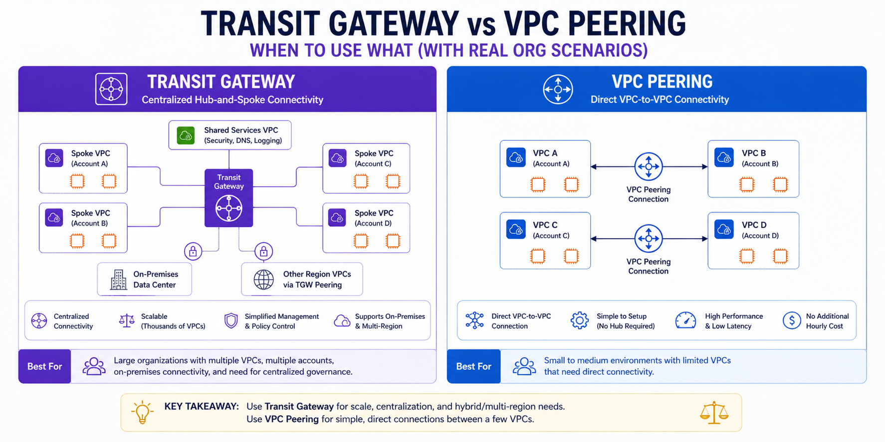

Technical Blog
Architecting for the Real World: AWS Deep Dives, Production Scaling Patterns, and the AI-Driven Cloud.

Master the foundations of AWS networking. Learn about subnets, route tables, IGWs, and the famous 'Rule of 5' reserved IPs.

Dive deep into Transit Gateway, PrivateLink, Global Accelerator, and cross-region peering for enterprise-scale workloads.

Cost & Architecture Trade-offs. A comprehensive comparison of secure internet and service connectivity patterns in AWS.

Mesh vs. Hub-and-Spoke. A deep dive into choosing the right connectivity strategy for enterprise-scale AWS environments.

Mastering Route 53 Private Hosted Zones, Resolver Endpoints, and cross-account DNS resolution.

Every enterprise AWS journey eventually reaches the hybrid connectivity question: how do your on-premises systems securely connect to AWS?
DevSecOps angle: Layered defense-in-depth, extending Gateway Load Balancer patterns for enterprise security.
Mastering the principle of least privilege. A comprehensive guide to Users, Roles, and Permission Boundaries at scale.
Continuous monitoring and automated threat detection. Building a secure perimeter using AWS native security services.